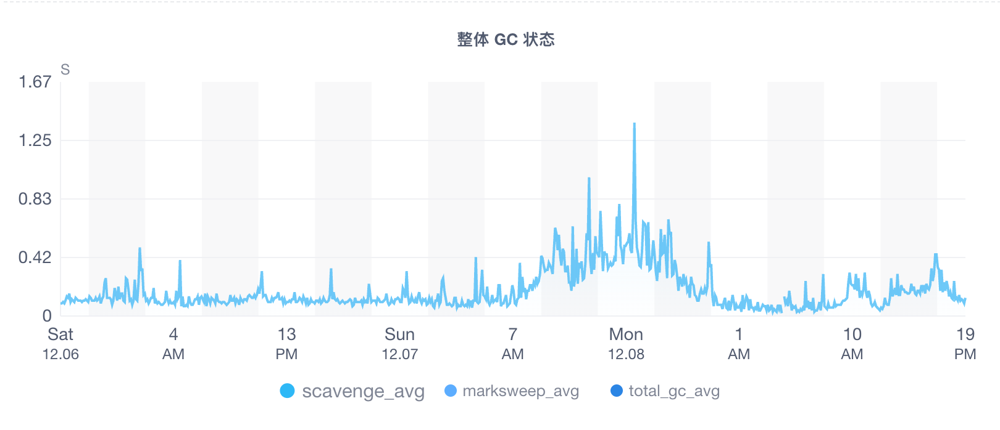
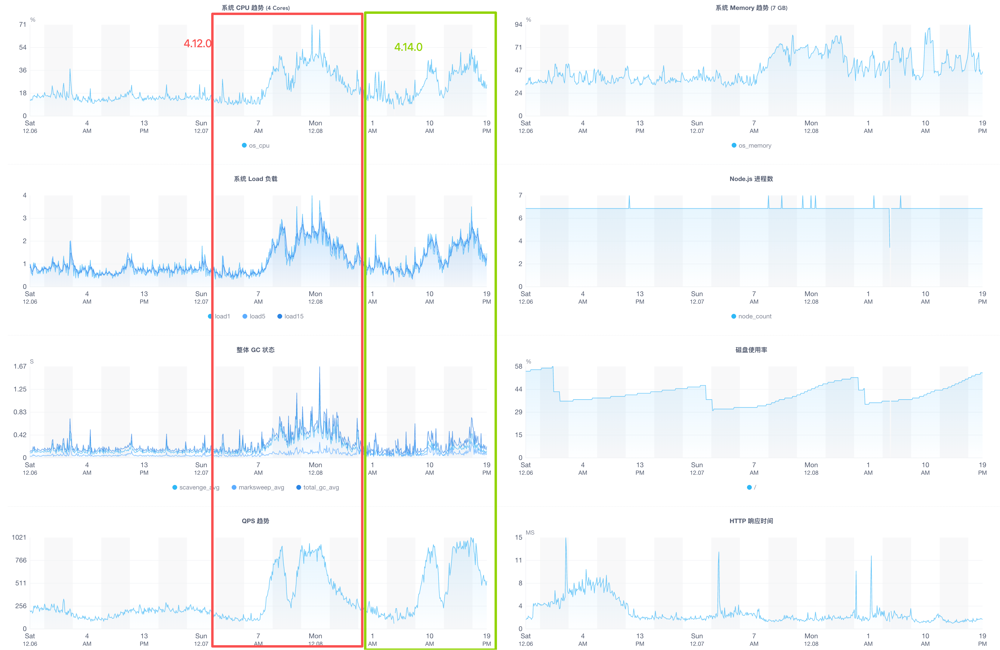

cnpmcore 超大 JSON parse 性能优化
问题
npmmirror registry 上偶尔会 CPU 狂飙一会，看日志发现这个时间段内有一个超多版本的 npm 包在同步，如 @primer/react。
最终发现这个 npm 包的 full manifests JSON 文件数据有 89MB，对它进行 JSON parse 后 Node.js 进程占用的内存高达 760MB。可见这个过程中创建了非常多的 JavaScript Objects，并且在 npmmirror 的同步场景中，这些 versions 数据绝大部分都是多余的，并不会被使用到。
所以问题来了，怎样才能做到按需读取需要同步的 versions 数据，而又不需要提前 parse 整个 JSON 数据。
通过 JSON.parse 读取 22MB 和 89MB 数据后的 Node.js 进程的内存占用对比（测试脚本）
Memory Usage:
JSONParse get property value (22M): 490.4 MB (min: 490.0 MB, max: 490.9 MB)
JSONParse get property value (89M): 796.2 MB (min: 766.1 MB, max: 871.4 MB)
思路
这个问题已经困扰 cnpmcore 好多年，第一次尝试是在 2023 年问题集中爆发的那段时间里，曾经想过使用 streamparser-json 来重构，发现要变更使用方式导致代码改动量还是挺大的，时间成本和复杂度太高中途而废了。
第二次尝试是 2024 年初偶然看到 simdjson_nodejs 这个 C++ 扩展，尝试几天后发现跨平台编译很麻烦而我又不想折腾毕竟我们每年都还得升级 Node.js 版本，于是又中断了。
最后一次尝试是 2025 年 11 月自己学习 Rust + simd-json 过程中发现可以结合 napi-rs 实现一个按需解析 JSON 的巧妙方法。在@Brooooooklyn 的指导下学会了 zero-copy 的方式让 Node.js 与 Rust 之间交换数据，最终选择在 sonic-rs 上实现了一个 npm full manifests JSON 专业的解析库 @cnpmjs/packument ，只需要传递 JSON Buffer 引用和当前版本号数组给 diff 函数，它就能按需计算出差异的版本信息以及该版本在 Buffer 数据中的偏移量位置，然后 cnpmcore 按需 parse 相对应的 versions 数据，这样最终的 JavaScript Objects 生成量会大大减少。
示意代码如下：
import { Package } from '@cnpmjs/packument'
import { readFileSync } from 'fs'
// Prepare local and remote package data
const localVersions = ['1.0.0', '1.0.1', '1.0.2']
const remoteBuffer = readFileSync('path/to/remote-packument.json')
// Create remote package instance
const remotePkg = new Package(remoteBuffer)
// Find the diff
const diff = remotePkg.diff(localVersions)
console.log(diff.addedVersions) // Versions in remote but not in local
console.log(diff.removedVersions) // Versions in local but not in remote
// Example output:
// {
// addedVersions: [
// ['1.1.0', [100992, 119796]], // [version, [startPos, endPos]]
// ['1.2.0', [119797, 138592]],
// ],
// removedVersions: [
// '1.0.1', // This version exists in local but not in remote
// ]
// }
重新跑一下 JSON parse 内存占用的测试脚本，可以看到基于 snoic-rs 的内存占用远小于 JSON.parse，并打开 V8 GC 监控可以看到 scavenge 从 200ms 直接下降为 0ms，代表这个过程中没有生成无用的 JS 对象。
Memory Usage:
JSONParse get property value (22M): 490.4 MB (min: 490.0 MB, max: 490.9 MB)
JSONParse get property value (89M): 796.2 MB (min: 766.1 MB, max: 871.4 MB)
SonicJSONParse get property value (22M): 93.1 MB (min: 92.1 MB, max: 94.1 MB)
SonicJSONParse get property value (89M): 159.7 MB (min: 158.9 MB, max: 160.6 MB)
## Benchmarking JSONParse with @primer/react.json
- Data size: 89MB
- GC: enabled
JSONParse get name of @primer/react.json: '@primer/react'
JSONParse get property value (@primer/react.json) #1 time: 431ms
JSONParse get property value (@primer/react.json) #2 time: 408ms
JSONParse get property value (@primer/react.json) #3 time: 430ms
JSONParse get property value (@primer/react.json) #4 time: 374ms
JSONParse get property value (@primer/react.json) #5 time: 375ms
[GC] total(ms)= 243.99 count= 26 avg(ms)= 9.38 byKind= {
scavenge: 209.25045899994439,
markSweepCompact: 33.537017999915406,
incremental: 1.2019700000528246,
weakc: 0,
unknown: 0
}
## Benchmarking SonicJSONParse with @primer/react.json
- Data size: 89MB
- GC: enabled
SonicJSONParse get name of @primer/react.json: '@primer/react'
SonicJSONParse get property value (@primer/react.json) #1 time: 0ms
SonicJSONParse get property value (@primer/react.json) #2 time: 0ms
SonicJSONParse get property value (@primer/react.json) #3 time: 0ms
SonicJSONParse get property value (@primer/react.json) #4 time: 0ms
SonicJSONParse get property value (@primer/react.json) #5 time: 0ms
[GC] total(ms)= 1.81 count= 2 avg(ms)= 0.90 byKind= {
scavenge: 0,
markSweepCompact: 1.6087210000259802,
incremental: 0.19731899996986613,
weakc: 0,
unknown: 0
}
发布
将 packument 合并到 cnpmcore#905 后，找 @elrrrrrrr 哥哥帮忙先在 r.cnpmjs.org 上灰度了 1 周验证没有稳定性问题后，终于在 2025 年的最后一个月发布到 npmmirror registry，总算将自己留下的一个巨坑给填上。
效果验证
巨型 npm 包可以顺利同步
如 carrot-scan 这个拥有 27550 个版本的 npm 包之前一直无法同步成功，这次更新后就能在 159ms 内计算出 diff 并顺利同步完成。
就算 npm registry 接口未来几年都不打算解决单包版本无限增长问题，cnpmcore 的同步机制依旧可以持续运行。
如果万一真的有一天单包的全量 full manifests 数据超过单进程内存上限😨，那么就得继续做技术方案重构了（真的有这一天，估计 npm install 也无法正常工作了）。
[2025-12-09T01:28:42.590Z] HTTP [200] body size: 108866043, timing: {"queuing":0.126,"dnslookup":0,"connected":0,"requestHeadersSent":0.159,"requestSent":0.208,"waiting":1430.597,"contentDownload":11589.122}
[2025-12-09T01:28:43.408Z] 🚧 Syncing versions 27550 => 27708, 158 added, 0 removed, calculate diff use 159ms
https://github.com/cnpm/cnpmcore/issues/900#issuecomment-3629797553
EZM 监控数据对比看到整体性有提升
cnpmcore v4.14.0 发布到 registry.npmmirror.com 的 EZM 监控对比：
Scavenge GC 明显减少了许多，代表临时生成的 JSON parse 对象确实变少了。

CPU、GC、QPS 的对比，更高的 QPS 峰值 CPU 更低了

升级后的 CPU Profile 分析报告
对比 v4.12.0 和 v4.14.0 的 cpuprofile 中关于应用层热点代码分析，可以看到 JSON parse 相关热点代码已经不见了，代表性能优化符合预期。
后续 cnpmcore 每次发布后都会做一下 CPU Profile 分析报告，并放在 https://github.com/cnpm/cnpmcore/wiki#performance Wiki 下，欢迎参考使用。
有爱
希望本文对你有用 💗